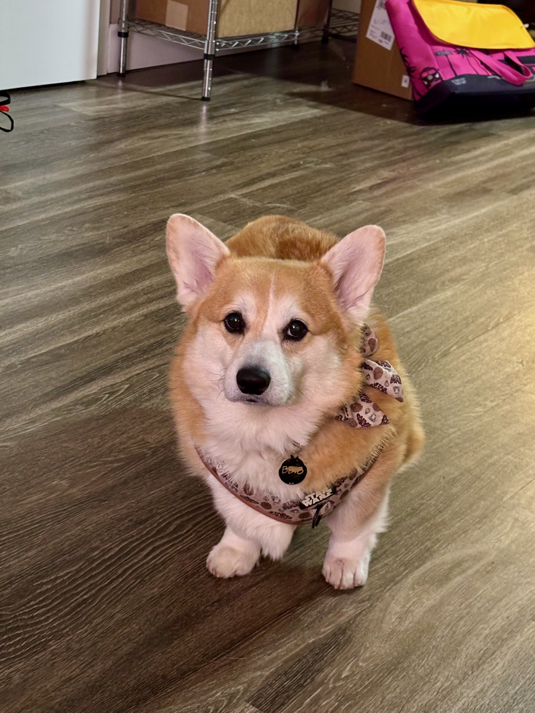

The Welsh Corgi is a small herding dog breed that originated in Wales, where two distinct varieties developed over centuries: the Pembroke Welsh Corgi and the Cardigan Welsh Corgi. Though similar in appearance, the two breeds have separate ancestry (see History, below).
The most recognizable physical trait of the Corgi is its low-slung body paired with a surprisingly sturdy and athletic build. Pembrokes typically weigh between 25 and 30 pounds and stand about 10 to 12 inches tall at the shoulder, with upright ears, a foxy face, and a naturally short or docked tail. Cardigans are slightly larger and heavier, distinguished by their long, flowing tail and rounded ears. Both varieties have a dense double coat that comes in a range of colors, including red, sable, fawn, and the classic tricolor of black, tan, and white.
Despite their compact size, Welsh Corgis are high-energy, highly intelligent working dogs that require regular mental and physical stimulation. Bred for a full day's work on the farm, they retain strong herding instincts and may attempt to herd children, other pets, or even their owners. They are known for their alert, curious, and often comically confident personalities — a temperament Welsh legend has explained charmingly by claiming Corgis were the preferred mounts of fairies, with the marks on their shoulders said to be fairy saddle markings.
In terms of care, Corgis are moderate to heavy shedders year-round, with two major seasonal blowouts, making regular brushing essential. They are generally healthy dogs with a lifespan of 12 to 15 years, though they are prone to certain conditions including hip dysplasia, degenerative myelopathy, and intervertebral disc disease — the latter partly due to their elongated spine. Keeping a Corgi at a healthy weight is particularly important, as excess weight places additional strain on their back and joints.
The Welsh Corgi has experienced a significant surge in global popularity in recent decades, fueled in part by internet culture, where their short legs, expressive faces, and oversized ears made them early and enduring social media favorites. The breed ranks consistently among the most popular in the United States, United Kingdom, and Japan. Both the Pembroke and Cardigan Welsh Corgi are recognized by the American Kennel Club, with the Pembroke falling under the Herding Group and the Cardigan sharing the same classification.
History
The Pembroke is believed to descend from dogs brought to Wales by Flemish weavers around the 10th century, while the Cardigan is considered one of the oldest breeds in the British Isles, with roots tracing back over 3,000 years to dogs brought by Celtic tribes.
Both Pembrokes and Cardigans were historically used by Welsh farmers to herd cattle by nipping at their heels and darting away from kicks — a technique that earned them the classification of "heeler" dogs.
Royalty
Welsh Corgis have a long association with the British royal family, most famously with Queen Elizabeth II, who owned more than 30 Pembroke Welsh Corgis during her reign. Her first Corgi, Susan, was a gift on her 18th birthday in 1944, and the breed became so closely associated with the Queen that it became a symbol of British culture more broadly. This royal connection brought significant international attention to the breed, helping establish the Pembroke Welsh Corgi as one of the most recognizable dog breeds in the world.[1]
Citations
[1] Sample content generated for educational/portfolio purposes by Claude Sonnet 4.6 Extended AI.
[2] Image from J. Bridges Design's late corgi, BB-8.
[3] Logo created by Google NanoBanana2 AI.